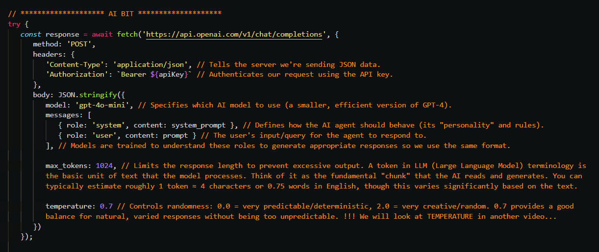
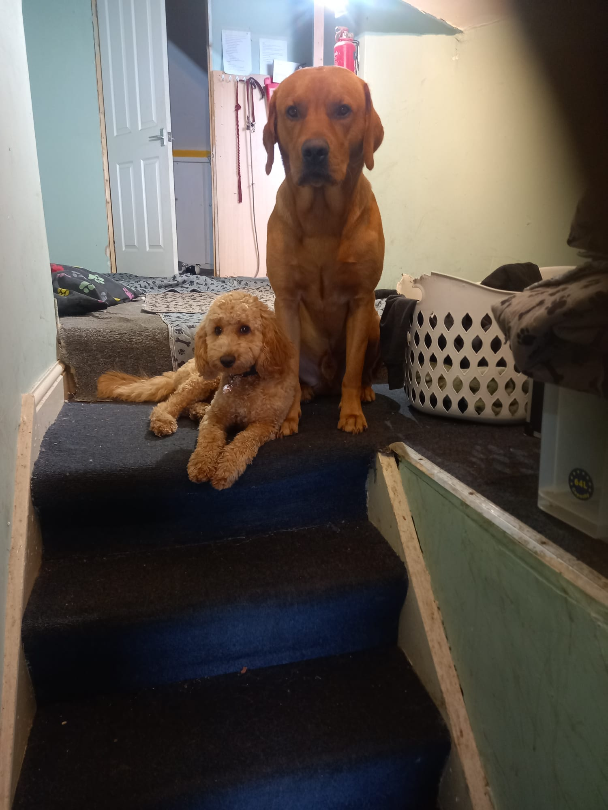
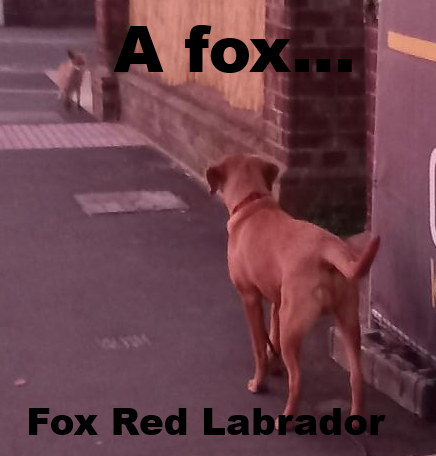

01The one-line pitch
AI Agents are just code making a REST API call — admittedly, a very magical API. Pull away the
hype and an agent is a fetch (a POST request with a JSON payload) wrapped in a loop, with some
history and some tools bolted on. That's it. This whole talk is about removing that fear.

This snippet — a fetch to the API with a payload — is the single most important
image of the night. Read it as one POST request: you send the model's rules and the user's question as a JSON
body, and it answers. Every "agent" you've ever heard of is just this line, wrapped in a harness.
My goal tonight is not to teach you a framework. It's to demystify and simplify — to show you the patterns and the structure, not the library details — so that when you go home you can build your own agent, or plug agents into the workflows you already have. Business as usual.
A quick word on who's doing the talking. I'm Craig West — one of you, a developer — and when I'm not wrestling with agents you'll find me walking a Fox Red Labrador (Leo) and a Cockapoo (Pip).

We even have a local red fox that follows us on the walks. The dogs and the fox have more patience with me than my code does, most days.

02My take on the AI agent moment
I have been a developer through some shifts, but this one got hold of me because it felt like a different world, not a different tool. So I went looking for a way in.
Three things were on my mind as I put this talk together:
- Client-side control. Instead of a server team pre-building every endpoint, I create the endpoint on the client side, at runtime, as I go.
- Natural language as the interface. I write the request in English, my language, not a rigid schema.
- Autonomy. The LLM decides the flow. The model chooses what to do next, not me.
If those three sound obvious once said — good, they are. That's the whole point.
The upside-down mouse
Here's the image I keep coming back to. Picture an upside-down computer mouse. When you pick one up the wrong way round, it's disorienting — but it's the same set of movements. Left, right, up, down. Just reversed. It takes a while to retrain your hand, but you already know how to do the motions.
Agentic AI is the upside-down mouse. The concepts are familiar — request, response, context, functions, loops. We've just got to flip how we think about who's in charge.
03History · Context · Looping · Tools
I keep four words pinned to the front of my mind, because every agent, however fancy, is built from them:
- History — the model is stateless at its core, so we give it memory by feeding back previous exchanges.
- Context — give it the facts it needs, either statically or fetched dynamically.
- Looping — repeat the call until the model decides it has a final answer.
- Tools — runtime functions it can reach for when it needs to do something or get more information.
Everything below is just one of these four ideas wearing a different coat.
Function composition is not new
For me the cleanest mental model is the boss-eyed function frame:
input -> function(input) -> output -> function(output) -> output2
And that "function" can be an agent, just as easily as it can be a class or a regular method in your app. Agent calls one agent, hands it output, waits for the next. No different to passing objects between Classes in a codebase. The first pass writes code with a system prompt; the next pass is a reviewer function that takes that output and produces the next version. Processes and classes, but with an LLM in the middle of the pipe.
Why temp = 0 is not deterministic
One small thing I want to flag early (there's a longer note in the repo,
why_temp_equal_zero_not_deterministic.md): dropping temperature to zero does
not make the model deterministic. Don't build tests on that assumption — the sampling and
hardware still introduce variety. Worth keeping in your back pocket.
04Progression through the demos
I've written four tiny HTML pages — each one is just a <script> with a fetch.
No build step, no framework, no SDK. They step up from "nothing" to "an agent," and each one adds one more of
the four building blocks.
The basic call
The very first page sends ONE prompt to OpenRouter and prints the answer. Under the hood it's a
system message (rules and personality) plus a user message, POSTed over HTTPS.
This is the whole magic trick, unwrapped. No state. Every click is a brand new conversation as far as the model is concerned. If I button-mash this page, the AI cannot remember what I said a second ago — because the API doesn't store anything.
This snippet — a fetch with a payload — is the most important takeaway of
the whole night. Everything else tonight hangs a harness around this line.
RAG
Still one call. But now I glue extra facts into the system prompt — facts the model was never trained on ("the meetup is 29 October at Platform9, speaker Craig West…"). This is Retrieval-Augmented Generation in its simplest form: bake the facts in before you ask.
It can be dynamic, too. That block of context normally comes from a database, an API, or a vector search. But the recipe never changes — retrieve the facts, stuff them in the prompt, ask. Context engineering, done.
Tool calling
Now it gets interesting. This page describes two tools to the model, get_weather and
get_sum, using JSON — name, description, parameter schema. Crucially, the
model never runs them. It only asks: "call this tool, with these arguments." My code does the
actual execution via a switch (no magic), then hands the result back into the conversation.
And here's the shift: this is the agent loop. The loop keeps running while the model asks for tools and stops when it decides it has a final answer (with a max-iteration guard so we never loop forever). The model directs the flow. That's the autonomy point from earlier, code in front of you.
Memory
Last building block. Same single fetch, but now we keep the whole conversation in
messages and resend all of it every call. That's all "memory" is — you replay
the tape back into the model each time. And because it's a browser, we persist it to
localStorage, so a refresh keeps the chat.
The honest cost is right in the console: more history = more tokens = more money. Memory engineering is really token budget management.
05PROMPT ENGINEERING → CONTEXT ENGINEERING → HARNESS ENGINEERING
I want to end on the point that changed how I think.
Tools to build your own coding agent are not as scary as they sound. You need: list files, read a file, edit a
file, write a file — and honestly, bash alone is enough; it subsumes the rest.
The bigger idea though, the one I keep telling people:
A harness with a lower model can outperform a higher model. Often it's the harness — the loop, the context, the tools, the memory — that decides the outcome, not the raw intelligence of the LLM.
That's liberating. It means the craft and the content of our jobs still matter. The engineering around the model is what makes it sing. My minimal coding agent is just a loop that runs until it finds an answer — and then I look back at the demo and think: everything we saw tonight was already there in miniature.
06Leave-behinds
Everything tonight is in the repo — the HTML pages, the notes, links to the explainer videos, and my mini coding-agent for you to fork and build on.
github.com/Python-Test-Engineer/BrightonDevAI-meetup-nov-2026Look at the patterns and the structure, not the code details. That is what got me through the upside-down-mouse moment — and it's what turns "AI agents" from a different world back into just code.